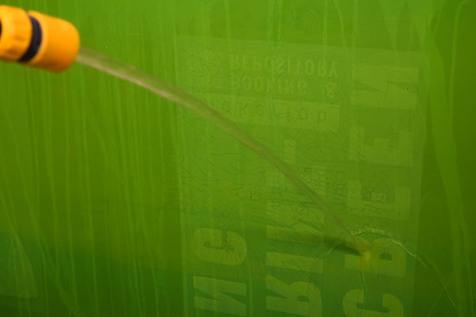

Screenprinting A-Z
Make your own prototype packaging
Make biodegradable prints, with spirulina ink on stone paper
 Print on any material
Print on any material
Hardly any other print method is as vibrant and diverse, in this guide we will walk through the basic principles and properties of screen printing.
Film Positive
In preparing your motif for print, keep your artboard constraints in mind, work in greyscale, use PDF and always print your film 100%.
Depending on the printer, you should use “kalkepapir” or regular overhead sheets. Makerlab will soon acquire a plotter for this purpose. That said, anything blocking light is eligible for exposure. As shown, you can even make a “film positive” in the laser cutter if you wish.
(IMG_2011.JPG)
(IMG_2101.JPG)
(DSC_0037.JPG)
Halftone Image
in Photoshop, place and scale your image in a document that corresponds with your printout (A3, e.g.).
Go to IMAGE > MODE > GREYSCALE > BITMAP: 300pixels/inch Method: Halftone Screen > Frequency: 54 - Angle: 45 - Shape: Ellipse. Save as pdf. This goes for anything that has halftone (grey) properties. Remember that the screen mesh is an extremely binary thing; it´s either light or non-light. No in-between.
(DSC_0047.JPG)
Emulsion
Stir the emulsion to avoid air bubbles, pour a hearty portion into the scoop coater, then with one hand on the screen and the other on the scoop, firmly coat the mesh in one swift movement. Make sure to apply a good amount of pressure. tilt the scoop back as you reach the top of the screen and let the rest of the emulsion fall back into the scoop. If smears occurs, a little piece of cardboard can be handy to even out the edges of your coating.
Return the residue emulsion back into the container. Seal the lid.
Leave the screen to dry in the cupboard. Clean the scoop.
(DSC_0119.m4v)
Exposure
Place your film facing up on the exposure unit. Make sure that the exposure table is free from any specs or dust, since this will leave an imprint too in the end. a good idea is to lead a piece of hose from inside the screen and out, in order to increase the vacuum. Close the lid and remember to fasten the clamps.
Turn on the vacuum, by turning the knob from 0 to Auto. After some 45 seconds, switch back to 0.
Get a stop watch ready on your phone, then turn the same knob from 0 to Hand, and expose your screen for 25 seconds.
Rinse
Bring the screen to the washroom (dont waste time in the bright light) and use the garden-hose to quickly wet the mesh on both sides. Patiently wash down the entire screen, and soon your motif will appear. Clear the mesh of all residue emulsion. At some point, you will notice a change of color (a slightly milky blue veil) this is important to get rid off, as it is likely to clutter back into the open mesh of your stencil. with your hand, gently scrub it free of the mesh and be sure to rid of any pockets of emulsions too.
Leave the screen to dry (in the rack, not the cupboard, since this will likely create condensation and possibly ruin the stencil)

Rigging and registration
Place and fasten your screen on the bench, use masking tape and paper to seal the gaps and edges (or other motifs) in your screen from cluttering with ink.
Tape your your original film to your substrate (paper, cardboard) where you want it to be, and use the guides to align your substrate with the motif on your screen. press down on the mesh to orientate. turn on the vacuum when your alignment is adequate, now the substrate is being held down in place. lift the bench slightly, sustaining the vacuum, and place two cardboard markers as shown, this will ensure a consistency in registration and allow for a more smooth work flow.

Printing
Prepare your ink: assuming you are using a water solvent ink (aqua set), add a little water and stir it, until you get the right viscosity. (smooth and creamy-like)
A good idea is to have some assistance while printing, as you will eventually end up with ink on your hands etc. So having somebody who can help you managing your papers e.g., to and from the print-table, is a great advantage. Remember; one has to work efficiently and fast, without interruption, otherwise the ink will clutter and ruin the mesh for good.
When you are all set and ready, place a good portion of ink with a spatular at the end off the screen towards you as shown. > - Place your substrate, and turn on the vacuum. With the bench at half mast, firmly coat your print-area with ink by pushing the squeegee away from yourself. This is called flooding.
Lower the bench, and with both hands, pull the squeegee in a 60 degree angle towards yourself, while applying an even pressure, swiftly. This is called stroking (NOTE: this takes practice.)
Lift the bench, and repeat the flooding as before, before you remove your substrate or anything else. It is paramount to keep the open mesh viscous, as the ink dries out incredibly fast. When you have made your last print, do not flood ink back into the mesh.
Cleaning
With a spatular, return the residue ink from the screen and the squeegee back into it’s container.
Bring the screen and the squeegee to the wash out booth to be cleaned, by using the ‘kitchen hose’. Make sure to rid of all pockets of ink, since even the tiny specks can keep bleeding into the open mesh.
DSC_0099
Wash out
To remove the emulsion (and delete your stencil) mix Saati Remover with water (1:25) in the screen cleaner spray. NOTE: this is highly toxic, so by all means use glasses, face mask and gloves when washing out and mixing the stencil cleaner.
Spray the solution onto the screen and let it sit for 1-2 minutes (not more). Fix the garden hose to the high pressure sprayer (remember to turn off the water flow after use) and spray the screen free of any trace of emulsion. A so-called ‘ghost image’ of any previous stencils might be visible but by holding the screen up against the light you can tell whether it is emulsion blocking or just ink dye of the mesh.
Lastly, spray degreaser onto both sides of screen and wipe it with a clean cloth. Then wash out, and place it back into the rack.
And like the cycle of life, the whole process repeats itself.
Godsspeed!